ITCS 6190 : CLOUD COMPUTING FOR DATA ANALYSIS
AMAZON FINE FOOD REVIEWS CLASSIFICATION
Dilly, Sai Nishanth
Kamshetty, Amulya
Nathala, Pooja Reddy
Introduction
The idea of this project is to build a model which predicts the rating based on Amazon food reviews.
Based on a survey, US economists found that when a restaurant rating improved by just half a star it was very
much more likely to be full at peak dining times, which proves good ratings boost takings while terrible ones
can close you down. Hence ratings play a very important role for a business’s fortunes. Therefore, prediction
of a rating based on a review will help the customer decide whether to buy a product or no, by just seeing the
ratings instead of reading the whole review.
Dataset
Data Collection :
We are using the dataset by Kaggle, Amazon fine food review dataset, which consist of 568454 rows of Amazon users reviews
upto oct 2012. The dataset consists of single CSV file, Reviews.csv, and a corresponding SQLite table named Reviews in
database.sqlite. We are taking input in .csv format therefore we are using Reviews.csv file. It has the columns : Id, ProductId,
UserId, ProfileName, HelpfulnessNumerator, HelpfulnessDenominator, Score, Time, Summary, Text. We are only using the score and
text columns of each unique ProductID for our algorithm implementation.
Description of dataset:
- -Id-row number in dataset
- -ProductId - unique identifier for the product
- -UserId - unique identifier for the user
- -ProfileName- profile names of the amazon users who gave rating and reviews
- -HelpfulnessNumerator - number of users who found the review helpful
- -HelpfulnessDenominator - number of users who indicated whether they found the review helpful
- -Score - rating between 1 and 5
- -Time - timestamp for the review
- -Summary - brief summary of the review
- -Text - text of the review
Challenges with Data:
The food reviews and rating provided in the dataset are mostly positive.Total number of rows-
- -Number of rows with score 1- 52268
- -Number of rows with score 2- 29769
- -Number of rows with score 3- 42640
- -Number of rows with score 4- 80655
- -Number of rows with score 5- 363115
- -The total percentage of rows having positive rating is 78.06%
Columns considered for Algorithms Implementation:
- -Unique Product ID
- -Score
- -Text
Sample data:
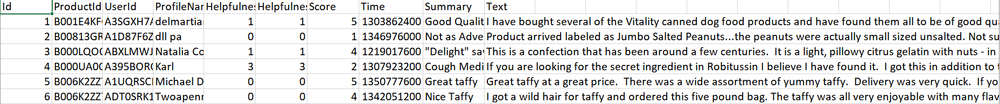
Key Decisions in Data Preparation:
- We are taking the SCore and Text columns from the amazon dataset,trimming the headers and appending it to the new dataset named dataset with new column names as rating and review respectively.
- We considered only english alphabets and numbers (a-z, A - Z, 0-9), ignoring the special characters in both algorithms implemented in this project.
- Stopwords in english are ignored using the nltk.corpus package and all other words are stemmed and lemmatized using the nltk.stem package. (punctuation, rt, via, us, it, i’m etc)
- Emoticons are removed (:) , :( etc) if any
- Words ending with -, words in ‘ ’,regular expressions and HTML tags are removed
Algorithms
Naive Bayes Algorithm : In machine learning, naive Bayes classifiers are a family of simple probabilistic classifiers based on applying Bayes' theorem with strong (naive) independence assumptions between the features. Naive Bayes is a collection of classification algorithms based on Bayes Theorem. It is not a single algorithm but a family of algorithms that all share a common principle, that every feature being classified is independent of the value of any other feature.
We implemented the multinomial Naive Bayes with smoothing. To classify, we calculated probabilities of the review belonging to each rating and then selected the class value with highest probability. We have performed computations by summing logs of probabilities rather than multiplying probabilities for underflow prevention.
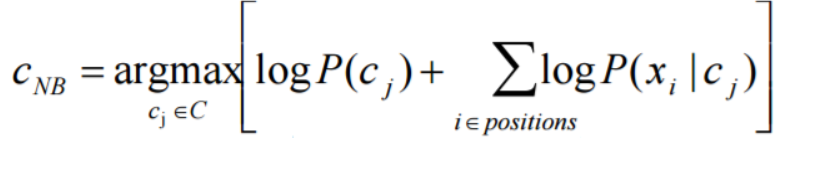
The number of different classes in this algorithm are 5 as the score is given from value 1 to 5 in the score column. So, the given input review can be classified into any of the 5 classes according to Model Fitted to the train data. We are partitioning the Input dataset from kaggle into 0.6 and 0.4 parts. 0.6 part of dataset is selected randomly and used for training, the remaining 0.4 data part is used for testing. The algorithm is implemented as follows: we are calculating the word and its corresponding P(xi|cj) probability according to the class to which it belongs using nk+alpha/n+alpha*vocabulary equation for each class. In the train data for each word in each review we are taking the corresponding probabilities in each class and add them to the class probabilities. Add all the probabilities for each word and finally find the class to which the review belongs to. We are executing for different values of alpha, value 5 have the highest accuracy.
K-Nearest Neighbors Algorithm : KNN purpose is to use a database in which the data points are separated into several classes to predict the classification of a new sample point.
For the prediction of rating, the algorithm searches through the training dataset for the k most similar instances.
Hamming distance has been used to classify reviews.
Logistic Regression Algorithm : It is a statistical method for analyzing a dataset in which there are one or more independent variables that determine an outcome.
Multinomial logistic regression is a classification method which explains logistic regression to multiclass problems(more than 2 discrete outcomes). The reviews, which are the independent variables are split into words and TFIDF scores are calculated. Then that score and rating is used to build the logistic regression model.
Installation
Required libraries and packages:
- 1) pip
step to install: sudo apt-get install python-pip
- 2) NLTK library - NLTK 3.2.1
steps to install: a)$python
b)import nltk
c)nltk.download('stopwords')
d)nltk.download('wordnet')
- 3) scikit - Latest
steps to install: a)sudo pip install scikit
- 4) Numpy - Latest
steps to install: a)sudo pip install numpy
- 5) Pandas - Latest
steps to install: a)sudo pip install pandas
System configrations to run:
- a) download spark-2.2.0-bin-hadoop2.7.tgz zip file from google
- b)tar -xvzf spark-2.2.0-bin-hadoop2.7.tgz
- c)sudo mv spark-2.2.0-bin-hadoop2.7 ~/
- d)go to spark-2.2.0-bin-hadoop2.7 folder from home
- e)go to conf folder inside it and change the spark.driver.memory in spark-defaults.conf to 8g if your system RAM is more than 8G.
Steps to run:
- 1) Download the zip folfer and unzip it.The folder has all code files, input user reviews file
- 2) Following are the names of the files and their actions-
NaiveBAccuracy.py - Naive Bayes implimentation from scratch, prints the accuracy for alpha value 1 to 5
NaiveBSklearn.py - Naive Bayes algorithm implemented using scikit learn library
NaiveBInput.py - Naive Bayes algorithm to fit the user input reviews from input file to the model and predict the rating of the reviews with alpha value 2 and writing these user reviews along with outputs to output file
KNNAccuracy.py - K Nearest Neighbor implimentation from scratch for K value between 10 to 50 with stepsize of 10
KNNSklearn.py - K Nearest Neighbor algorithm implemented using scikit learn library
KNNInput.py - K Nearest Neighbor algorithm to fit the user input reviews from input file to the model and predict the rating of given input reviews with K value 25 and writing these user reviews along with outputs to output file
LogisticAccuracy.py- Logistic regression implementation from scratch, prints the accuracy of the predictions made by the algorithm
LogisticSklearn.py-Logistic Regression implemented using the scikit learn library
- 3) To run the file, follow the below command :
spark-submit
Example: spark-submit NaiveBAccuracy.py
Important Note :
- a) Make sure that the dataset file is named as Reviews.csv
- b) Reviews.csv file should be present in the same directory as the pyspark file
- c) Input.txt has the user input reviews which should be in same directory for which ratings are predicted.
- d) Output file will be stored in the same directory of code files and inputs
As the dataset taken have size above 300 MB we used an amazon EC2 instance for running this huge dataset, We have create Amazon Ec2 Instance:
Steps to create and launch Amazon EC2 instance :
- 1.) go to AWS console choose launch instance and select ubuntu 64 bit operating system
- 2.) Choose instance Type t2.2xlarge general purpose with 32GB memory and click on create
- 3.) Make sure the instance is running and download the key file to desktop


To connect to the instance type:
- 4.)cd Desktop
- 5.)chmod 400
- 6.)ssh -i “.pem" ubuntu@ec2-52-14-246-18.us-east-2.compute.amazonaws.com
- 7.)Follow above steps to install required packages to run project.
- 8.) Finally, use FileZilla to connect to EC2 instance for file transfer between your server and desktop.
Evaluation
Screenshots
Naive Bayes Accuracy :
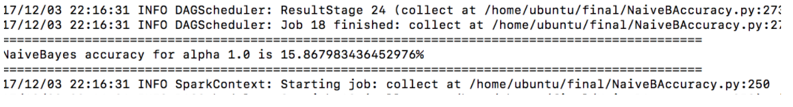
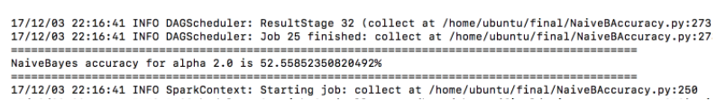
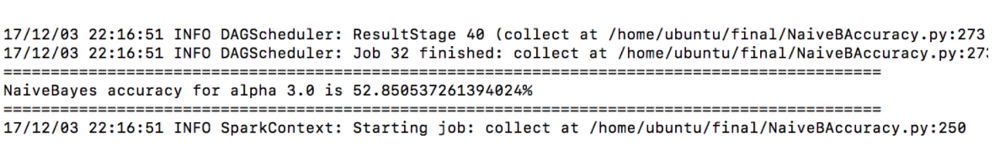
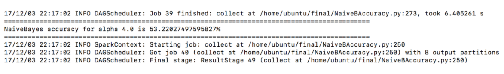
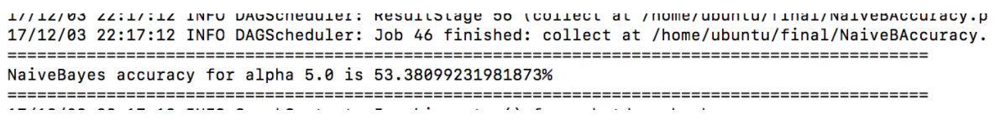
Naive Bayes prediction using user Input :
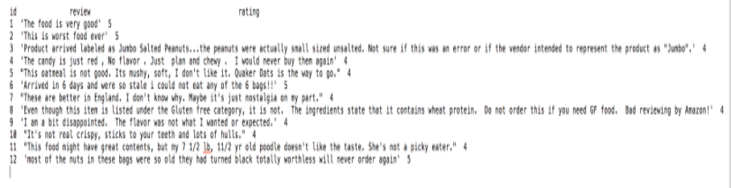
Naive Bayes using Sklearn:
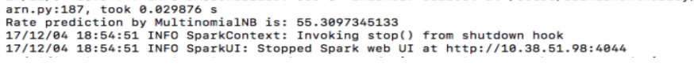
KNN prediction using user Input :
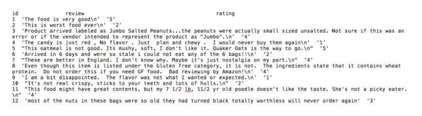
KNN Accuracy :
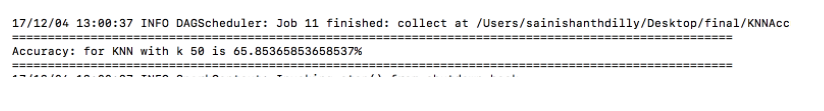
KNN using Sklearn :
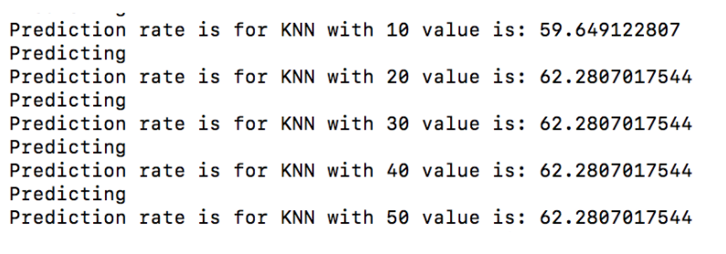
Logistic Regression using Sklearn :
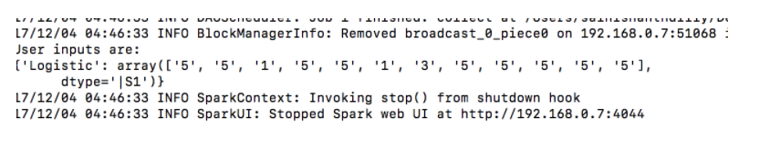
Logistic Accuracy :
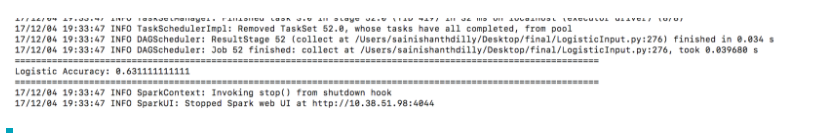
Project Deliverables
Core Deliverables :
- Pre-processing of data set using NLTK libraries
- Implementation of K-Nearest Neighbors and Naive Bayes algorithms and finding the correctness of algorithm using accuracy of predicted Rating
- Comparison of accuracy of implemented algorithms with scikit-learn libraries
Additional Deliverables :
- Implementation of Logistic Regression algorithm for rating prediction by building the model
- Implementation of Logistic Regression using scikit-learn library.
- Taking review from user reviews file and predicting the rating
Additional Comments
- Faced java outofmemory error while running for 300MB dataset, which was resolved by increasing spark.driver.memory in spark-defaults.conf file.
- Project was run on Amazon Ec2 instance, 8 cpus and 32GB memory.
- Amazon food Data set ratings are biased towards 5, this gave us inconsistencies while calculating accuracies.
Task Division
Dilly, Sai Nishanth
Implemented the K-nearest neighbor algorithm
Implemented the Logistic Regression algorithm
Taking user review and predicting the rating based on the model built using KNN and Naive Bayes
Nathala, Pooja Reddy
Implemented the prediction model using Naive Bayes algorithm
Implementation of KNN algorithm with scikit-learn libraries
Calculating the accuracy of the fitted data
Kamshetty, Amulya
Retrieving, Cleaning and preprocessing the data. For example, removing the stop word, non-alphanumeric characters, Stemming and lemming.
Implementation of Naive-Bayes algorithm with scikit-learn libraries
References